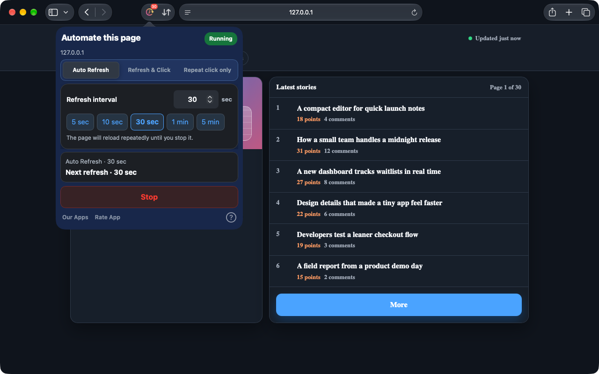
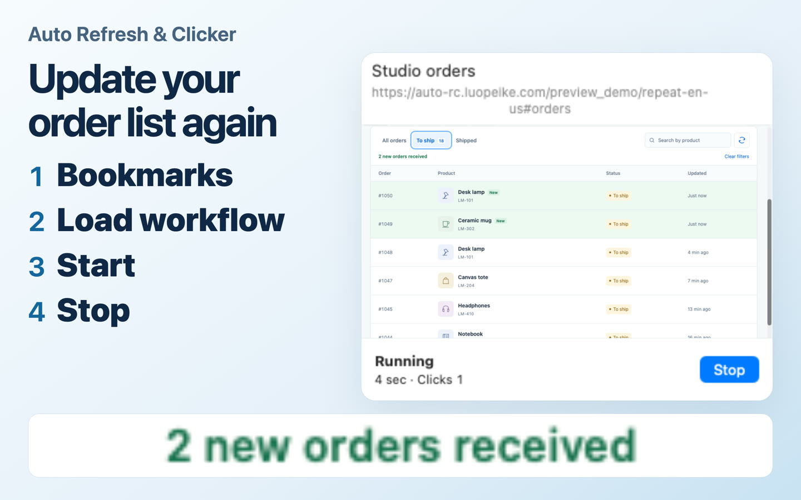
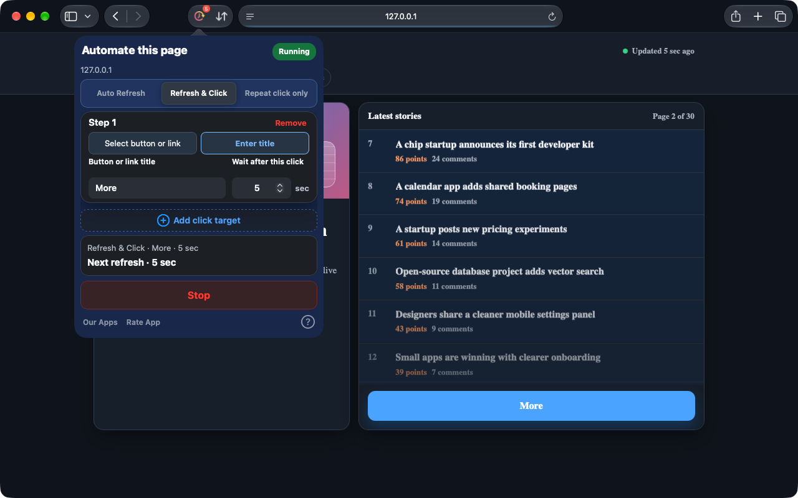
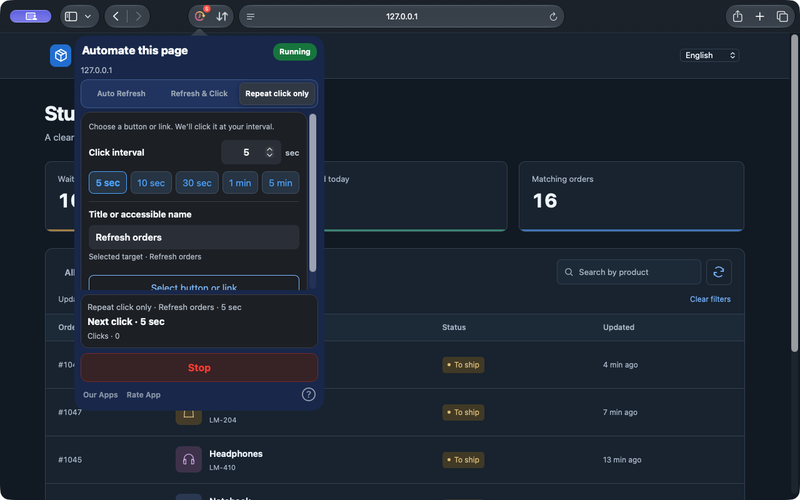

Auto Refresh
Pick a preset or enter a precise interval to keep dashboards, inventory, and status pages current.
Set up auto refreshReopen a bookmarked order list, load its saved steps and click the list’s refresh button on a timer. Work in the app or use the extension in Safari.
Name and save more than one workflow for the same full URL. When you return to that address, load the steps you need, check them and press Start. Workflows stay in the app or browser where you saved them.
Read the setup guide

Pick a preset or enter a precise interval to keep dashboards, inventory, and status pages current.
Set up auto refresh
Choose a button or link on the page, or enter its title. After each refresh, follow your click steps with a wait after each one.
Set up refresh and click
Repeat clicks without reloading the page. Pick even an icon button, set the interval and keep your list moving.
Set up repeat clicksiPhone / iPad · Mac
Install and open the app, then enable the extension in Safari Settings and allow access to your website.
Choose a mode and set the interval or the wait after each step. For clicks, pick a button or link on the page, or enter its title.
Start and check Running and the countdown. Stop at any time, or apply changes to update the task.
In the app, give a bookmark a name or reopen a recent page. History stays on this device until you delete it. You can pause recording or clear visits and keep your bookmarks and workflows.
PrivacyWork on webpages inside the iPhone, iPad or Mac app, or on a Safari tab with the extension. Desktop Chrome has a separate extension.
Select an icon directly, or enter a button or link name. If part of the name changes, enable wildcard matching and use * for that part. The task stops if it cannot identify a single available match.
Open the installed app at least once, then check Safari Settings → Extensions. Use Safari 15.4 or later. If it is still missing, contact support with your macOS, Safari, and app versions and installation source.
In the current Safari version, edit the configuration and choose Apply changes. The summary shows the active task. Choose Stop to end it.
See each store for current pricing and compatibility.